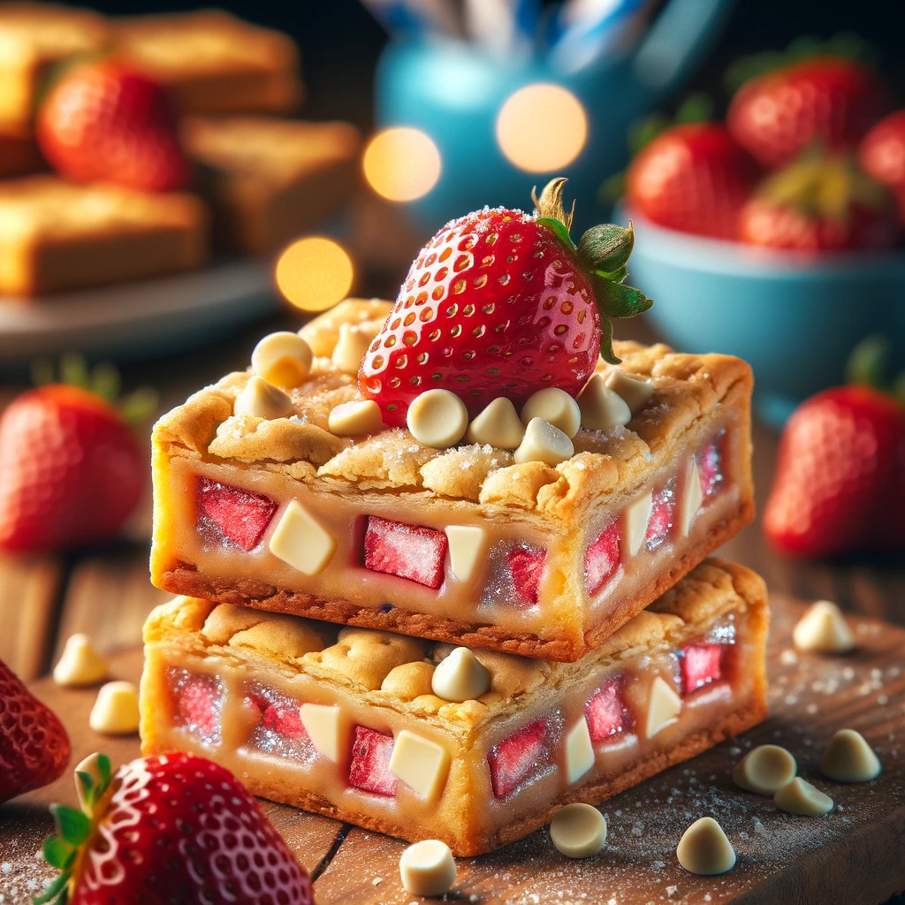

Strawberry Pop-Tart Blondies

Description
Indulge in a nostalgic twist with these chewy blondies infused with the iconic flavors of strawberry Pop-Tarts, bringing back childhood memories in every bite.
Ingredients
- 1 cup (2 sticks) unsalted butter, melted
- 1 cup brown sugar
- 1/2 cup granulated sugar
- 2 large eggs
- 1 teaspoon vanilla extract
- 2 cups all-purpose flour
- 1/2 teaspoon baking soda
- 1/2 teaspoon salt
- 1 cup chopped strawberry Pop-Tarts (about 4 Pop-Tarts)
- 1/2 cup white chocolate chips (optional)
Steps
- Preheat your oven to 350°F (175°C). Grease and line a 9x13-inch baking pan with parchment paper, leaving an overhang for easy removal.
- In a large mixing bowl, whisk together the melted butter, brown sugar, and granulated sugar until well combined.
- Add the eggs one at a time, beating well after each addition. Stir in the vanilla extract.
- In a separate bowl, sift together the flour, baking soda, and salt. Gradually add the dry ingredients to the wet ingredients, mixing until just combined.
- Gently fold in the chopped strawberry Pop-Tarts and white chocolate chips, if using, until evenly distributed throughout the batter.
- Spread the batter evenly into the prepared baking pan, smoothing the top with a spatula.
- Bake in the preheated oven for 25-30 minutes, or until the blondies are golden brown around the edges and set in the center.
- Allow the blondies to cool completely in the pan before slicing into squares. Enjoy these delightful Strawberry Pop-Tart Blondies as a sweet treat any time of day!